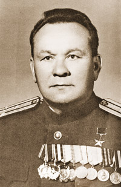

Бельский Иосиф Александрович
Иосиф Александрович Бельский Иосиф Александрович Бельский — известный белорусский партизан, один из организаторов подпольного и партизанского движения в Беларуси во время Великой Отечественной войны. Он был удостоен звания Героя Советского Союза. Иосиф Бельский родился 21 сентября 1903 года в деревне Лошица, которая сегодня находится в черте Минска. С юных лет он трудился на железной дороге, а позже занимал различные государственные должности. Когда в 1941 году началась Великая Отечественная война, Бельский стал одним из руководителей подпольного движения в Минской и Гомельской областях. Он помогал создавать партизанские отряды и подпольные организации, которые боролись против немецких захватчиков. Иосиф Александрович участвовал в организации боевых операций, разгроме вражеских гарнизонов и диверсиях на железных дорогах. Под его руководством и при его участии развивалось партизанское движение на территории Беларуси. За особые заслуги в борьбе с немецко-фашистскими захватчиками 15 августа 1944 года Иосифу Бельскому было присвоено звание Героя Советского Союза. После окончания войны он продолжил работать на благо Беларуси. Занимался восстановлением Минска и в течение десяти лет возглавлял Белорусский республиканский совет профсоюзов. Иосиф Александрович Бельский умер 25 июня 1966 года и был похоронен в Минске. В память о его заслугах одна из улиц Минска названа его именем. Его жизнь является примером мужества, самоотверженности и преданности своей Родине.